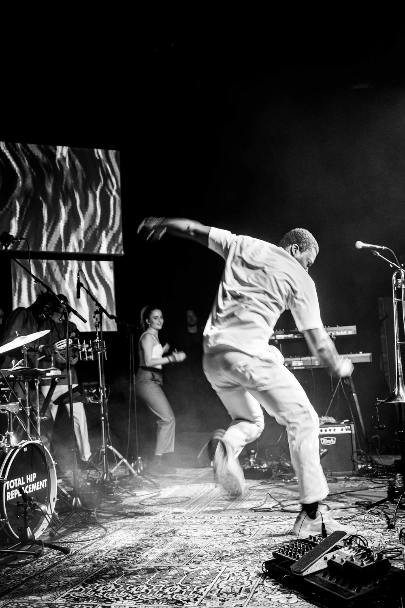
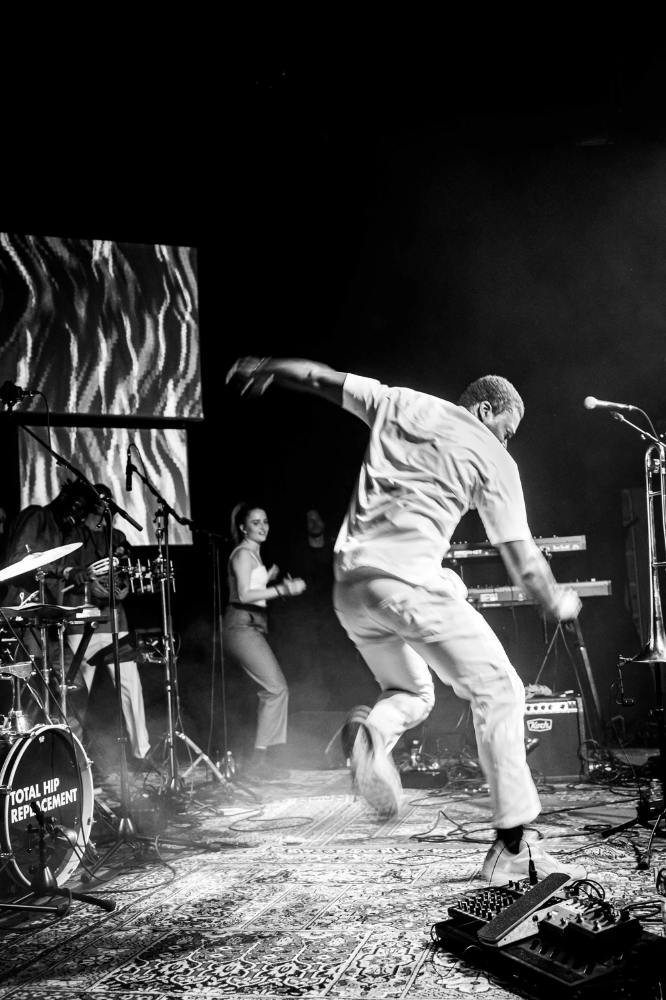

By The Synkron Team
Roots & Hybrid
Process:
Being a part of realizing Roots & Hybrid Festival 2022 and setting the visual tone of the festival was a huge blast for us.
Roots & Hybrid Festival is a yearly event curated by the foundation and crew of Turkis
Many things can be said about Turkis and their numerous initiatives, but for us it's definitely their dedication to keeping an open mind, to staying curious and to welcome eclectic crossovers between genres, art and music - this all resonates so well with us.
Throughout the collab we had several meeting with the organizers in order to set the visual tone of the festival. We researched on their identity, and the visual designs of past events before created a series of posters where a final winner was picked. Upon delivery we created a package of graphical assets which the communications manager could use to promote the festival on all their digital platforms.
The graphic design carried through from the digital promotions to the physical poster design and to the animated announcement visuals at the venue making it easy for participants to distinguish the festival and connect to it across platforms and finally experience visuals unfold in a series of immersive concert experiences.
Credit: Photography by Patryk Kuziemski
Products:
We were hired by Turkis to do graphic design, live visuals and aftermovie for the Roots & Hybrid Festival 2022, but in the end it became so much more.
By tying the different mediums together we managed to create a visual tone of the festival which carried through on everything from the digital platforms, to the physical urban environment of the city, to the venue of the festival and after.


 



{kind=link}
{kind=link}
{kind=link}